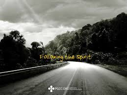
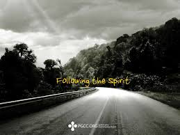

.jpg) 

We in One GOD, mainfesting himself in three persons as the Father, the Son and the Holy Spirit(Gen 1:26, Deut 6:4, Matt 28:19 and John 14:26)
We believe in the bible to be verbally insipred , the inerrant word of GOD and when rightly interpreted by the holy spirit,to be the unfallible rule of faith and practice(Psa 45:1, Ezek 1:3, Matt 24:35, Luke 24:27)
We believe the Lord Jesus Christ to be the only savior of all men,conceived by the holy spirit, born the virgin Mary very(fully). GOD again according to the scriptures.He personally appeared in his new body to his disciples before ascending to his seat at the right of the majesty in the heavens. Jesus finished his work(his death,burial,resurrection and ascension) reversed the curse concering the spirit,soul and the body of the first man Adam. He is the only way to the father,the only valid door and entry in the realm of the spirit(Gen 3:15, Isa 7:14, Matt 1:18-25)
We believe in the creation and subsequent fall of man,with the result that he,without GOD, is in the state of total spiritual depravity, unable to attain to devine righteousness by means of its own wisdom and strength. Unregenerate man, with a beast nature, needs a savior(Gen 1:29, Rom 5:1-2, Eph 2:8-9, Rev 13:8)
We believe that this conversion experienced should be followed with water baptism by immersion in the name of the Lord Jesus Christ for the remission of sins and the circumcision of the heart.The old man is put to death and the new creation man arises to walk in the newness of the life.Blood,water(baptism), and the spirit constitute the three witnesses that initiate the new convenant
We believe in observing often the ordinances of the Lord’s Supper. The Eucharist, the table of the Lord, is the ongoing celebration of the new convenant(Matt 26:26-28, Luke 22:17-20, 1Cor 10:16-17)
We believe that sanctification is once and for all as progressive in nature: first from the time of conversion, God himself sets the believer apart by the blood of Jesus, then the believer seperates humself unto a holy washing himself daily with the word. The spirit directed life holiness in the fear of the Lord(Matt 5:48, 1Cor 1:30 , 2Cor 6:7-11 , Eph 5:25-27, Col 3:8-13, Heb 9:12-14)